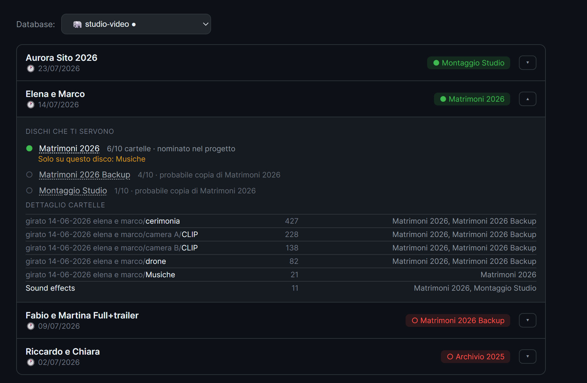

Windows e macOS · licenza una tantum
Il disco è nel cassetto. Il tuo lavoro lo trovi lo stesso.
NanoTracker cataloga i tuoi dischi esterni. Scrivi il nome del cliente e ti dice su quale disco sta la cartella — anche se quel disco è spento, in uno scaffale, o collegato al Mac di un collega.
Senza carta di credito. Scarichi, installi e cerchi.
La stagione "calda" è finita.
E ora, dove sono i file?
Conosci la sensazione. Ti chiedono di recuperare la cartella del lavoro "Panettone Antonini" fatto tre mesi fa. Hai 15 hard disk impilati sulla scrivania. Inizi a collegarli e scollegarli uno a uno, aspettando che il sistema operativo li legga, sprecando ore preziose. Non deve per forza andare così.
Progettato per i flussi di lavoro creativi
Fotografi, videomaker e studi: abbiamo risolto il vostro problema numero uno.
Ottimizzato per i progetti
NanoTracker non intasa il database tracciando milioni di file singoli inutili (a meno che tu non lo voglia). Traccia di default le cartelle. Cerchi il nome del cliente o dell'evento e hai il risultato in un lampo.
Ricerca offline immediata
Il disco è in un cassetto? Nessun problema. Interroghi il database e NanoTracker ti dice il nome esatto dell'hard disk e in quale percorso si trova il tuo lavoro, ancora prima di collegarlo.
Database condiviso per lo studio
Lavori in team? Punta tutti i PC dello studio allo stesso MariaDB. Se oggi scarichi un lavoro sul PC di Giovanna, domani Josy lo trova con una ricerca dal suo Mac. Tutto sincronizzato.

Quale dei due dischi ti serve davvero?
Tieni ogni lavoro su due dischi gemelli. Ma il montaggio l'hai fatto su uno solo, e solo quello ha le musiche, le grafiche, i file aggiunti strada facendo. Quando il progetto passa alla color, quale prendi?
NanoTracker apre il tuo progetto e ti dice su quali dischi stanno davvero i file che quel progetto usa, evidenziando quello che contiene materiale che gli altri non hanno. Senza aprire il programma, senza collegare i dischi.
Lavora in rete senza stress
L'interfaccia ti mostra chiaramente non solo i tuoi dischi offline, ma anche quelli attualmente connessi ad altri computer sulla tua rete locale. Un unico "cervello" per tutto lo storage del tuo studio.
Paga una volta. Nessun abbonamento.
Scegli la licenza più adatta al tuo flusso di lavoro.
Prova
Testa il software con i tuoi dischi.
0€ / 15 giorni
- Tutte le funzioni sbloccate
- Nessuna carta di credito
- Database locale
Solo
Perfetto per freelance e nomadi digitali.
49€ una tantum
- Licenza per 1 computer
- macOS e Windows
- Database locale SQLite
- Aggiornamenti minori inclusi
Studio
Per team che condividono risorse.
99€ una tantum
- Licenza per 5 computer
- macOS e Windows
- Sblocca MariaDB condiviso
- Tracciamento dischi di rete
Scarica NanoTracker
Prova gratis per 15 giorni. Nessuna carta di credito richiesta.
Inserisci la tua email per accedere al download.
Niente spam. Solo aggiornamenti importanti sul prodotto.
Domande frequenti
Come funziona la prova gratuita?
Scarichi e installi NanoTracker. Hai 15 giorni per provare tutte le funzionalità con database locale. Non serve carta di credito. Alla scadenza puoi acquistare una licenza per continuare a usarlo.
Posso usare la stessa licenza su Mac e Windows?
Sì. La licenza Solo vale per 1 computer (Mac o Windows). La licenza Studio vale per 5 computer, anche misti Mac e Windows.
Cosa succede se cambio computer?
Puoi disattivare la licenza dal vecchio PC direttamente dalle Impostazioni dell'app e riattivarla sul nuovo. Nessun contatto con il supporto necessario.
Qual è la differenza tra Solo e Studio?
Solo usa un database locale sul tuo PC. Studio sblocca il database condiviso MariaDB: tutti i PC dello studio vedono gli stessi dischi e possono cercare i file degli altri. Perfetto per team di 2-5 persone.
Quali metodi di pagamento accettate?
Carte di credito/debito (Visa, Mastercard, Amex), PayPal, Apple Pay e Google Pay. I pagamenti sono gestiti da Lemon Squeezy in modo sicuro.
Supporto
Hai bisogno di aiuto? Siamo qui per te.